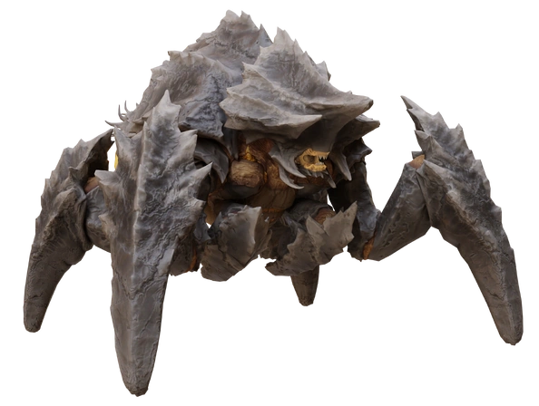
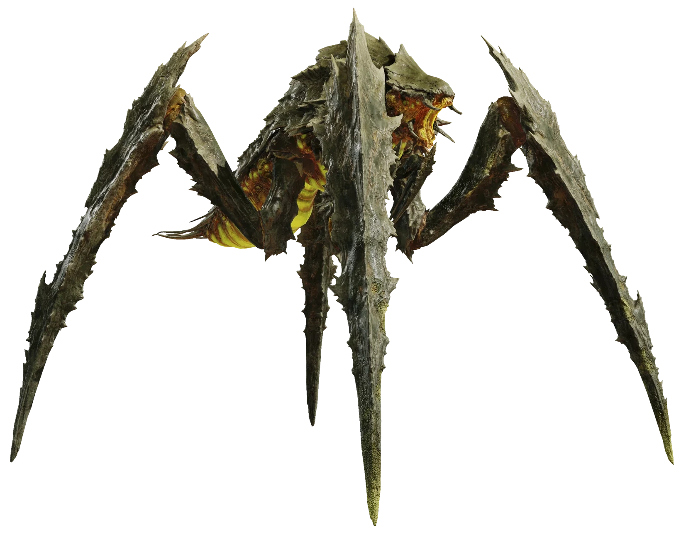
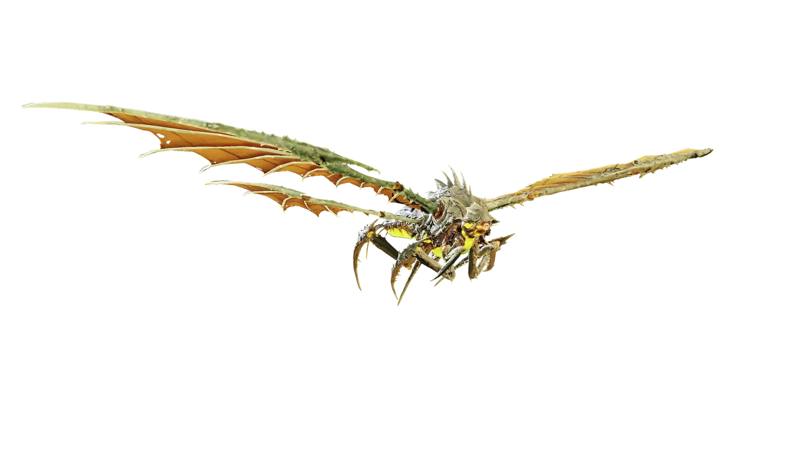
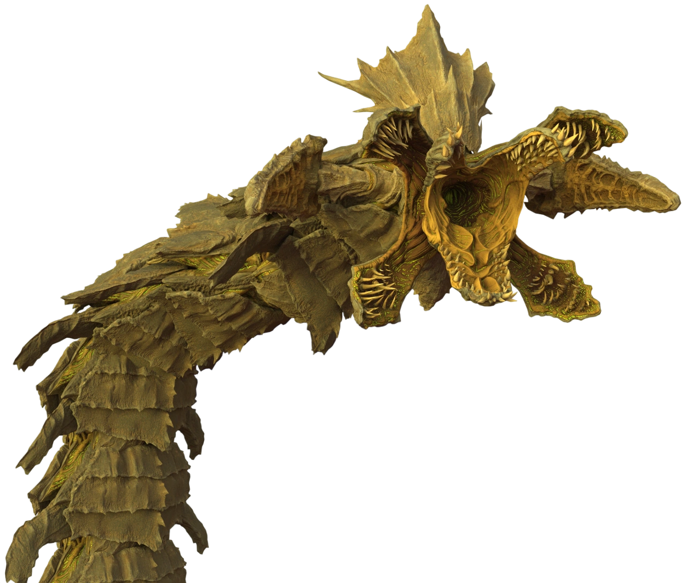

The Terminids, biologically engineered weapons of destruction. While they may look like insects, they spread spores, making them an anomaly to nature itself. Make sure to bring your fighting boots helldiver, and STOMP them into the ground.
For Super Earth, and Democracy
Strategy:
The Terminids are a largly meele faction, with dangerous close-range potential, light armour works best on this faction, allowing for swift retreats from the advancing hordes. Adittionally, the biological nature of the Terminids makes them quite susceptible to fire and incindiary weapons.
Tough Enemies:
The Bile Spewer

The Bile Spewer, it has thick plating on its abdomen and top of its head, but the sides and inside of the mouth are vaunerable to even light penetrating weapons.
The Charger

The Charger, a heavy enemy which charges at you (who would have thought), the only vaunerable spot on this bug is the backside, even so, you will need medium penetration to destroy it. Aditionally it is vaunerable to the recoiless rifle and EATs if shot directly into its mouth.
The Bile Titan

The Bile Titan, although formidable, a bile titan can be brought down in a single shot from the recoiless rifle or EATs, if shot directly in the head. Aditionally, if its bile is giving you trouble, you can shoot the bile sacks on its underside, this will render it unable to spit its vile bile on you, and your team-mates.
The Dragonroach

The Dragonroach, a frightening sight indeed, these flying bile titans can be brought down in the same way as the bile titan, adittionally, they take additional damage from explosive weapons, so a autocannon with flak rounds shreds this beheamoth in no time.
The Hive Lord.

The Hive Lord, a gargantuan opponent, with full armour that can only be broken with anti-tank weaponry, it it truly an unstoppable force. However, hellbombs and hellbomb back-packs can hit several segments at once, even so, it may take up to tens of hellbombs to take it out. Reccomended stratigems include, eagle strafing run, gatling barrage and emancipator exo-suit. Can and will kill you and your entire team, Liberty be with you helldiver.